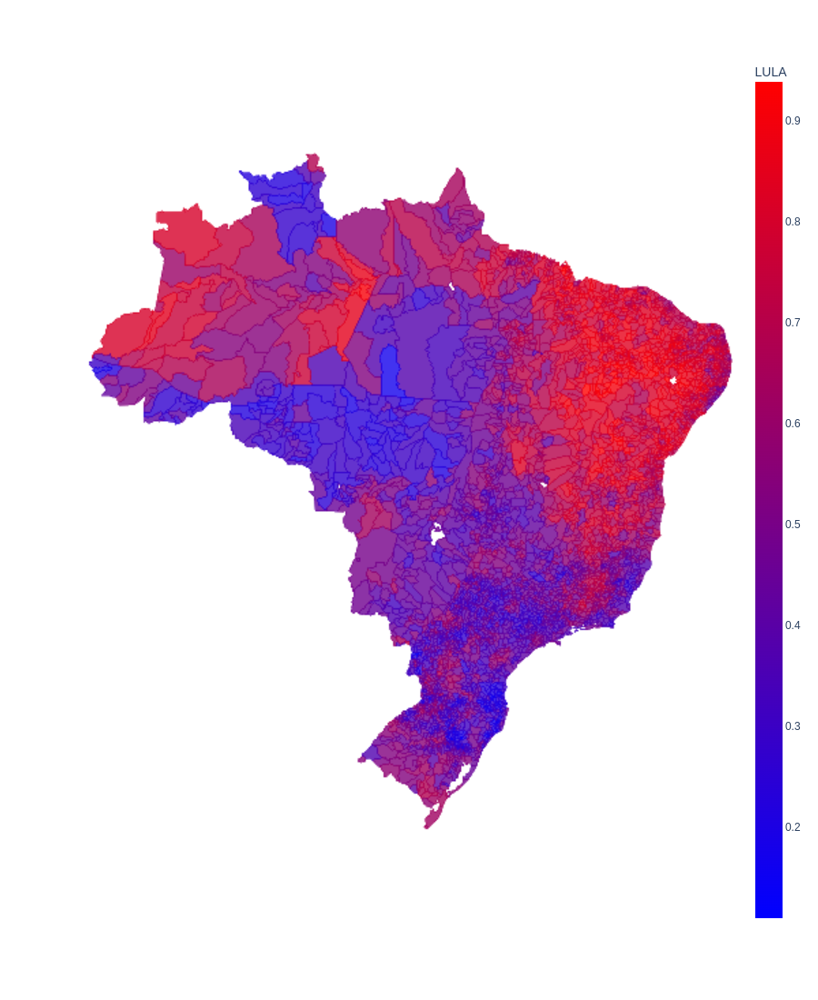
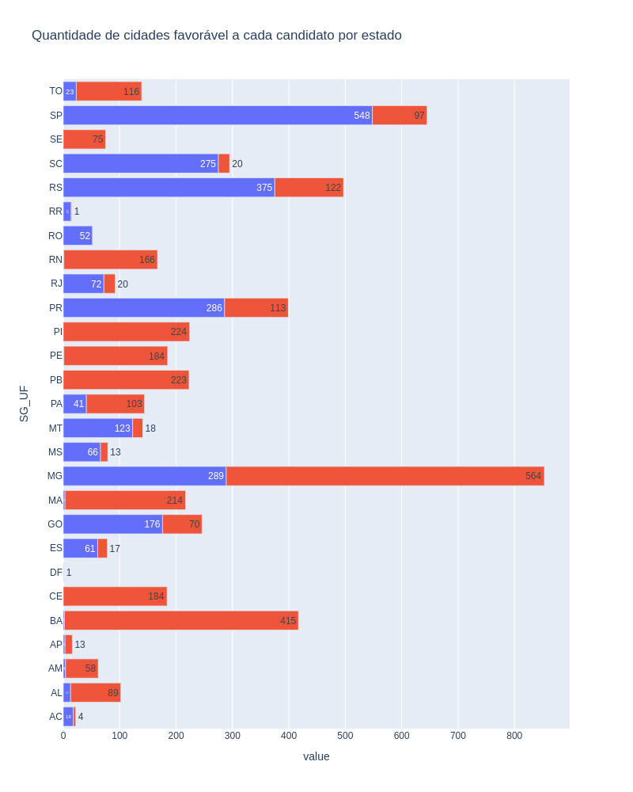

O Nordeste é vermelho, Sul e Sudeste nem tão azuis assim.
Resultado eleição presidencial no segundo turno
Uma análise por municipios
Apesar do Bolsonaro ter mais votos nos estados do Sul, Sudeste e Centro-Oeste, e o Lula no Nordeste,
vale a pena um olhar sobre como foi a escolha em cada município.
Embora seja uma eleição majoritária, é interessante identificar a preferência em cada comunidade.
Muitos estados do Nordeste parcem ter quase um consenso considerando quantos municípios foram favoráveis a Lula.
Em estados como PB, PI, SE, e CE, foi unânime. E em outros como BA, PE, RN, MA, AM, acima de 90% dos municṕios a favor de Lula.
Dos estados mais Bolsonaristas, apenas RO (com 52 cidades) foi unânime.
Embora nos estados de RR (15 municípios) e SC (295 municipios), 93% dos muncípios votaram pelo Bolsonaro.
Em outros estados, há uma parcela maior de cidades que não acompanham a maioria de votos absolutos no estado.
Como os estados do PR, RS, e SP, que contam com 28%, 25% e 15% de cidades pró Lula, respectivamente.
Siga os links abaixo para navegar no mapa e gráfico interativos
Mapa do Brasil destadcando o resultado por municipio (sem background)
Quantidade de municípios a favor de cada candidato por estado

Mapa do Brasil destadcando o resultado por municipio (com o mapa em background)